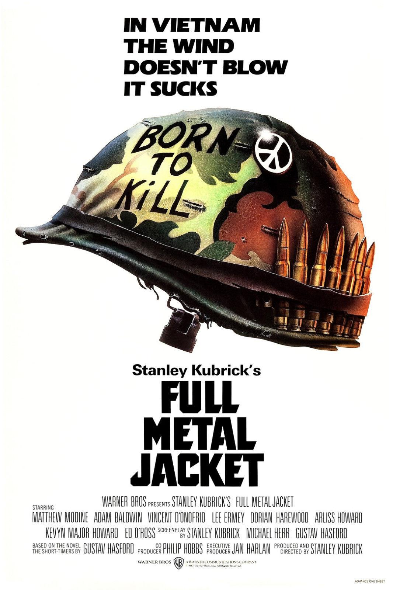
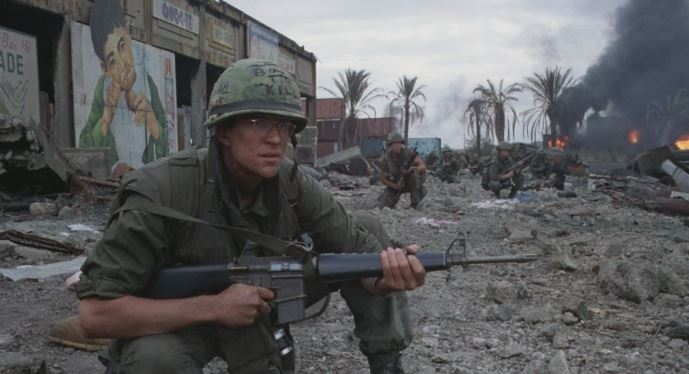

Dir. Stanley Kubrick

"They'd rather be alive than free, I guess... poor dumb bastards."
Full metal jacket is a play in two parts, the first centering on a squad of marines at boot camp, and the second focusing on a squad of marines in Vietnam. It shows how not only is war ugly, it is disorganized, a lot of the time it is dumb and pointless, and it is in the hands of an 18 year old with a gun. Words cannot describe how much I love this movie. I don't want to say too much about the plot for anyone who hasn't seen it yet, but please go watch it. It's as relevant today as ever. War never changes its face. The face of war is the 18 year old with a gun in their hands.

"I am in a world of shit, yes. But I am alive, and I am not afraid."
In the film, one of the other journalists that Joker interacts with tells him about the thousand yard stare. He describes it as the stare that marines/soldiers get when they've been in the field too long, seen too much violence. I think that the thousand yard stare comes from the realization that all of the violence and trauma experienced by a soldier is senseless, and essentially means nothing, because the war does not end until a diplomat decides it's over. The war of attrition is never won - it's forever and always a war of politics - where the politicians are never the ones harmed. It is the 18 year old with a gun in their hands.